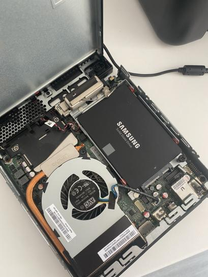
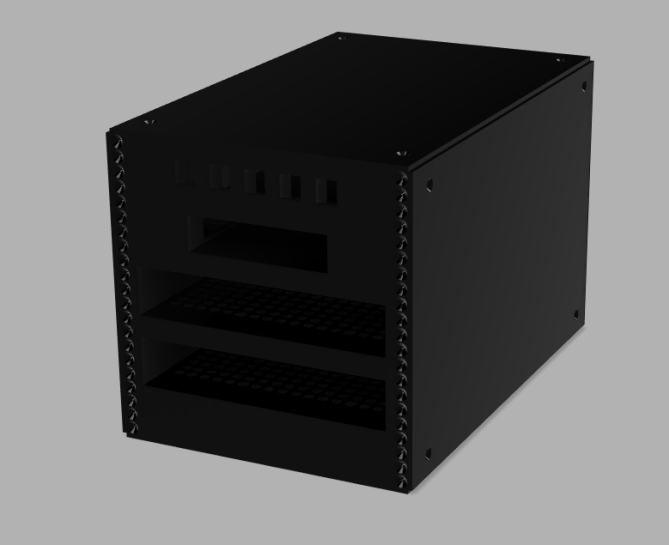

M700
October 12, 2022 —
tb
Hello!
I'm going to present you very briefly my little server.
It's a Lenovo Thinkcentre M700 Tiny bought 90€ on eBay.
Its specs are :
- CPU: Intel i3-6100T @ 3.2GHz Quad-core
- RAM: 24GB DDR4 @ 2133MHz
- Storage: 250GB SSD

I use this server to host :
- Minecraft server for my friends
- Jellyfin
- a NAS
- temporary file uploader (soon)
